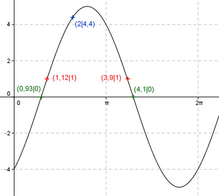
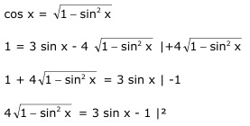
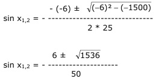

Aufgabe 219 Ergänzen Sie die Wertetabelle für x zwischen 0 und 2π: y = 3 sin x - 4 cos x x 2 1,12 oder 3,9 y 4,4 1 Amplitude = 5 (Berechnung siehe unten); Periode = 2π Berechnung der Nullstellen: 0 = 3 sin x - 4 cos x |+4cos x 3sin x = 4cos x |:3 sin x = (4/3) cos x |:cos x sin x 4 sin x ------- = --- mit ------- = tan x cos x 3 cos x 4 tan x = --- --> 3 4 x = arc tan --- = 0,93 3 x1 = 0,93 gerundet oder 53,3°. x2 = (π + 0,927) = 4,06 (4,1 gerundet) oder 234,9° Berechnung der Amplitude A: Sie tritt an den Stellen x = 53,1° + (232,6° - 53,1°)/2 = 142,85° oder 2,5 oder bei (142,85° + 180°) = 322,85° oder 5,64 gerundet auf. A = f(142,85, 322,85°) = 3 sin 142,85° - 4 cos 142,85° = = |3 sin 322,85° - 4 cos 322,85°| = 5 gerundet.  Funktionswert an einer Stelle x ermitteln: x = 2 y = f(2) = 3 sin 2 - 4 cos 2 = 3 sin 114,6° - 4 cos 114,6° = 3 * 0,909 - 4 * (-0,416) = 4,4 gerundet. Berechnung der x-Werte für y = f(x) = 1 f(x) = 1 eingesetzt, existiert zwischen 0 und π bzw. 0° und 180° und zwischen π und 2π bzw. 180° und 360° (siehe Graph). 1 = 3 sin x - 4 cos x  16(1 - sin2 x) = 9 sin2 x - 6 sin x + 1 16 - 16 sin2 x = 9 sin2 x - 6 sin x + 1 |+16 sin2 x 16 = 25 sin2 x - 6 sin x + 1 | -16 25 sin2 x - 6 sin x - 15 = 0 A, B, C - Formel: A = 25 ; B = -6 ; C = -15  6 ± 39,2 sin x1,2 = - ----------- 50 sin x1 = 0,91 --> x1 = arc sin 0,91 = 1,14 gerundet. sin x2 = - 0,66 --> x2 = arc sin - 0,66 = -0,72 gerundet. Weil zwischendurch quadriert wurde, ist eine Probe nötig. Probe: Für x1: 3 sin 1,14 - 4 cos 1,14 = 1 ? 3 * 0,909 - 4 * 0,418 = 1 gerundet Lösung Für x2: 3 sin - 0,66 - 4 cos - 0,66 = 1 ? 3 * (- 0,72) - 4 * 0,79 = -5,32 keine Lösung Die Funktionswerte liegen gleich weit von der Amplitudenstelle entfernt: 1,14 * 180° x1 = 1,14 gerundet oder ------------- = 65,3° π x2 = 1,14 + 2 * (2,5 - 1,14) = = 3,86 (3,8 gerundet) oder 217,7°